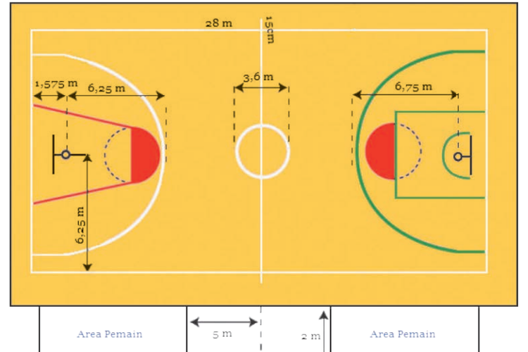

<- Kembali
Bola Basket
2 Materi
Pengertian
Bola basket adalah permainan beregu dengan masing-masing regu terdiri atas 5 orang pemain. Lama permainan basket ditentukan oleh waktu yaitu 4 x 10 menit, artinya setiap babak dimainkan selama 10 menit.
Sejarah
Permainan bola basket diciptakan oleh Dr. James Naismith pada tahun 1891 atas anjuran Dr. Luther Halsey Gulick. Dr. Luther menganjurkan kepada Dr. Naismith untuk menciptakan permainan baru yang dapat dimainkan di dalam gedung, mudah dimainkan, mudah dipelajari, dan menarik. Pada tahun 1924, permainan bola basket didemonstrasikan pada Olimpiade di Prancis. Pada tanggal 21 Juni 1932 atas prakarsa Dr. Elmer Beni, direktur sekolah olahraga di Jenewa diadakan konferensi bola basket. Dalam konferensi ini terbentuklah Federasi Bola Basket International yang diberi nama Federation Internationale de Baskteball Amateur (FIBA). Pada tanggal 23 Oktober 1951 berdirilah Persatuan Basketball Seluruh Indonesia (PERBASI). Tahun 1953, PERBASI diterima menjadi anggota FIBA dan tahun 1955 kepanjangan PERBASI diubah menjadi Persatuan Bola Basket Seluruh Indonesia.
Sarana dan Peralatan
a. Ukuran Bola Basket
1) Ukuran dan berat bola basket yang disetujui oleh FIBA yaitu berat 567-650gram dan keliling bola 749 - 780mm.
2) Ukuran dan berat bola basket yang digunakan dalam pertandingan NBA, yaitu berat bola 623,7gram dan keliling bola 749,3mm -755,65 mm yang di ukur dari garis bola, keliling bola basket harus mencapai 752,5 mm-758,8 mm.
3) Ukuran bola basket yang dipakai dalam sebuah pertandingan yang ditetapkan NCAA yaitu berat bola 567-623,7gram dan keliling bola 749,3- 762 mm. Bola terbuat dari kulit, karet, atau bahan sintetis lainnya. Apabila dipantulkan pada ketinggian 1.80 m, bola basket dapat memantul 1.40 m.
b. Lapangan Bola Basket
Keterangan:
* Panjang lapangan: 26 m
* Lebar lapangan: 14 m
* Diameter lingkaran tengah lapangan: 3,6 m
* Tinggi ring: 2,75 m
* Diameter ring: 0,45 m
* Ukuran papan pantul: 1,80 m x 1,20 m